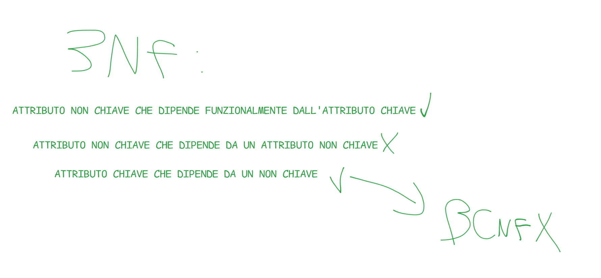

TRANSAZIONI
Una transazione è un’unità logica di elaborazione in un database, composta da una sequenza di operazioni che devono essere eseguite tutte insieme, oppure nessuna. prevedono
-
un
begin transactionche è l’inizio -
una serie di operazioni come
updateinsertselectdelete
-
possono terminare o con un
commit workse tutto va benerollback workse qualcosa va storto si possono fare operazioni di
-
UNDO: ripristina i dati prima dell’errore.
-
REDO: ripete un’operazione persa dopo un crash. Log:
BS=5,AS=10questo log tiene salvato che BS=5 se fai undo torna al valore del log
START TRANSACTION;
UPDATE ContoCorrente SET Saldo = Saldo - 100 WHERE NumConto = 1001;
UPDATE ContoCorrente SET Saldo = Saldo + 100 WHERE NumConto = 2002;
COMMIT;ACID delle transazioni
le transazioni devono garantire 4 proprietà fondamentali
| Proprietà | Significato |
|---|---|
| Atomicità | Garantisce che il blocco di operazioni venga eseguito tutto |
| Consistenza | Rispetta i vincoli del DB |
| Isolamento | Nessuna interferenza tra transazioni |
| Durabilità | Una volta fatto commit, le modifiche restano in memoria fisica |
Garanzia delle proprietà
Per garantire tali proprietà occorre effettuare controlli su
- affidabilità (per atomicità e durabilità),
- concorrenza (per isolamento),
- esecuzione delle operazioni (consistenza) questi controlli vengono fatti dal gestore delle transazioni
- il controllo sull’affidabilità viene facilitato da un file di log che contiene vari checkpoint dei dati che sono già stati salvati nel database
- molto spesso le modifiche vengono messe sul log e dopo in memoria fisica(modalità differita)
- il DBMS ha una copia del database detta dump
Gestione dei guasti
affiancato al gestore delle transazione abbiamo il recovery manager
- colui che ha il compito di gestire il ripristino dai vari errori ci sono 2 tipi di guasti
- SOFT
- differenza di informazioni tra memoria principale e secondaria
- quella principale(RAM) ha una perdita ma quella secondaria(HDD) no
- differenza di informazioni tra memoria principale e secondaria
- HARD
- sia in primaria che secondaria ma il contenuto e salvato nella memoria stabile
- log e dump
- sia in primaria che secondaria ma il contenuto e salvato nella memoria stabile
Le operazioni di ripresa si dividono in 2 tipi
- a caldo (4 fasi) guasto “soft”
- cerca ultimo checkpoint nel log
- costruisce due insiemi di operazioni
- undo, operazioni da disfare
- redo, operazioni da rifare
- nel log cancella tutte le operazioni che sono state inserite andando a ritroso UNDO
- parte dal punto in cui si ferma l’UNDO e avanza nuovamente nel log rifacendo le operazioni con il REDO
- a freddo guasto “hard”
- ripristini da un dump
- successivamente riprendi il log e rifai tutte le operazioni fino al crash
- appena avviene il crash fai una ripresa a caldo
Gestione della concorrenza
tra più transazioni potrebbero esserci problemi di concorrenza, quest’ultima è gestita da degli scheduler che dirigono le varie transazioni
Normalizzazione
Le forme normali nelle basi di dati (o normalizzazione dei database) sono una serie di linee guida progettate per organizzare i dati in una base di dati relazionale per minimizzare la ridondanza e migliorare l’integrità dei dati.
1NF
- atomicità
- no ripetizioni
- no attributi multivalore valore atomico= valore indivisibile se lo dividi non va bene
2NF
- deve essere già in 1NF
- non dipendenze parziali
- A,X→ B con solo però A→ B e non X→ B così è parziale
3NF
- deve essere già in 2NF
- eliminare dipendenze transitive
- A→ B B→ C e non abbiamo che A→ C questo non va bene
BCNF Boyce-Codd
È una forma più ristretta della 3NF è in BCNF se
- per ogni dipendenza funzionale non banale A→ B A risulta una super chiave
- Una dipendenza funzionale A→B è non banale se B non è un sottoinsieme di A. 
TIPOLOGIE DI DIPENDENZE FUNZIONALI
def: è una relazione in cui un insieme di attributi determina un altro insieme di attributi
- TRANSITIVA
- se ho A→ C io posso arrivare a C esclusivamente da un altro attributo non chiave B→ C con A→ B
- PARZIALE
- A,C→ X con X che dipende funzionalmente solo o da A o da C
- COMPLETA
- da A posso derivare tutti è una superchiave
- BANALE
- Se ho una dipendenza A→ B e B è sottoinsieme di A
SONO USATE PER
- normalizzazione dei dati - integrità dei dati
- struttura del database solida
ALGEBRA RELAZIONALE
L’ algebra relazionale è un insieme di operazioni utilizzate per manipolare e interrogare i dati nelle basi di dati relazionali in un modo formale
TIPI DI OPERAZIONI
- SELEZIONE σ
- Estrae le righe che soddisfano una condizione (filtra le tuple).
- PROIEZIONE π
- Estrae alcune colonne di una relazione, eliminando i duplicati.
- RINOMINAZIONE ρ
- Rinomina il nome della relazione e/o dei suoi attributi
- UNIONE ∪
- Unisce due relazioni con lo stesso schema, restituendo tutte le tuple distinte.
- DIFFERENZA −
- Restituisce le tuple che sono nella prima relazione ma non nella seconda.
- PRODOTTO CARTESIANO ×
- Combina ogni tupla della prima relazione con tutte quelle della seconda.
poi anche una serie di operazioni che derivano da queste elementari
- INTERSEZIONE ∩
- Restituisce le tuple presenti in entrambe le relazioni.
- JOIN NATURALE ⋈
- Combina due relazioni sulle colonne con lo stesso nome (e valore uguale).
- LEFT JOIN =⋈
- Come il join naturale, ma include tutte le tuple della relazione sinistra, anche senza corrispondenze.
- RIGHT JOIN ⋈=
- Come il join naturale, ma include tutte le tuple della relazione destra, anche senza corrispondenze.
- THETA JOIN ⋈_ROBA
- Join condizionato su una qualsiasi condizione booleana θ (es:
A.id = B.cod AND A.anno > 2020).
- Join condizionato su una qualsiasi condizione booleana θ (es:
- DIVISIONE ÷
- Restituisce le tuple della prima relazione che sono associate a tutte le tuple della seconda (usata in query del tipo “tutti”).
CALCOLO RELAZIONALE
Approccio che sfrutta la logica del primo ordine per esprimere le query linguaggio dichiarativo
- diverso dall’algebra relazionale
- usa formule per indicare le condizioni che le tuple devono soddisfare per essere prese nelle query
DUE VARIANTI
TRC
- calcolo relazionale sulle tuple
- utilizza delle variabili
- esse sono le tuple in esame Sintassi Generale:
- t rappresenta
- rappresenta una formula logica da rispettare Dove: Esempio: Consideriamo una relazione Dipendenti con attributi (DID,Nome,Salario). Trova i nomi e i salari dei dipendenti che guadagnano più di 50000.
DRC
- calcolo relazionale sui domini
- qui si lavora su singole variabili che rappresentano attributi singoli Sintassi Generale: Dove: Esempio: Consideriamo la stessa relazione Dipendenti(DID,Nome,Salario). Trova i nomi e i salari dei dipendenti che guadagnano più di 50000.
TRIGGER
Un trigger è un oggetto del database che: si attiva automaticamente al verificarsi di un certo evento su una tabella.
- INSERT
- DELETE,
- UPDATE esegue una serie di istruzioni SQL in risposta a quell’evento.
Abbiamo due tipi di TRIGGER BEFORE → che si attiva prima dell’esecuzione dell’operazione, AFTER → che si attiva dopo,
SINTASSI
CREATE TRIGGER nome_trigger
{BEFORE | AFTER} {INSERT | UPDATE | DELETE}
ON nome_tabella
FOR EACH ROW
BEGIN
-- istruzioni SQL da eseguire
END;ESEMPIO Immagina una tabella Ordini e vogliamo registrare un log ogni volta che viene inserito un nuovo ordine:
CREATE TRIGGER verifica_eta_cliente
BEFORE INSERT ON CLIENTE
FOR EACH ROW
BEGIN
IF NEW.data_nascita > CURDATE() - INTERVAL 18 YEAR THEN
SIGNAL SQLSTATE '45000' SET MESSAGE_TEXT = 'Il cliente deve essere maggiorenne (almeno 18 anni)';
END IF;
END; INDEX
È una struttura dati usata per avere accesso in tempo costante a determinati dati nel database. Quando fai spesso query del tipo:
SELECT * FROM Studenti WHERE matricola = 12345;
Se la tabella ha 10 milioni di righe, senza indice il DB deve scorrere tutte le righe.
Con un indice su matricola, il DB va a cercare come in un dizionario: sa subito dove guardare. SINTASSI
CREATE INDEX nome_indice ON nome_tabella (colonna);
Esempio pratico:
CREATE INDEX idx_matricola ON Studenti (matricola);
HAVING
Serve per filtrare i gruppi dopo che hai fatto un GROUP BY.
Viene utilizzato perché dopo un GROUP BY non puoi usare WHERE per filtrare su funzioni aggregate (COUNT(), SUM(), ecc.), ma serve l’having
ESEMPIO
SELECT Cliente, SUM(Importo) AS TotaleOrdini
FROM Ordini
GROUP BY Cliente
HAVING SUM(Importo) > 200;WHERE
Serve per filtrare le righe di una tabella, selezionando solo quelle che rispettano una certa condizione. ESEMPIO
SELECT *
FROM Studenti
WHERE Corso = 'Informatica';Sicurezza delle Query
Voglio
- risultati concreti
- tempo costante
Potenza espressiva
Tutto ciò che posso fare con algebra relazionale posso farlo anche con il calcolo. Tuttavia il calcolo tende ad essere più dichiarativo.
Chiusure
La chiusura di un insieme di attributi
Xrispetto a un insieme di dipendenze funzionaliFè l’insieme di tutti gli attributi cheXdetermina tramiteF.
Si indica come:
ESEMPIO
Immagina di avere le seguenti DF
Vogliamo calcolare 🛠 Passo 1 — inizializzazione: 🛠 Passo 2 — applichiamo le DF:
- KL → M ⇒ possiamo aggiungere
M:- M → N ⇒
Mc’è → aggiungiamoN:
Chiave minimale (chiave candidata)
Una chiave minimale è un insieme minimo di attributi che riesce a determinare tutta la relazione. Se togli un qualsiasi attributo da essa, gli altri da soli non determinano più tutto.
Nel senso che, se io tolgo una chiave qualsiasi dalla chiusura, dentro l’insieme non ho più tutti gli attributi presenti nella DF.
Per esempio
Da questo deriva che
Questa è sia una superchiave (perché determina tutti gli attributi) sia una chiave minimale (non ci sono ridondanze).
Se tolgo L da KL, ottengo solo K., ma con K da solo, non riesco più a determinare P e O.
Quindi KL è minimale: ogni suo attributo è necessario per determinare tutta la relazione.
Insieme minimale di DF,
n insieme minimale di DF è un insieme di dipendenze funzionali equivalente all’originale, che permette di derivare tutti gli attributi senza ridondanze. ESEMPIO Insieme base delle DF
1️⃣ `A → B` 2️⃣ `B → C` 3️⃣ `A → C` 4️⃣ `C → D`
Vari passi da seguire
- Eliminare, se possibile, attributi doppi a destra (es.
A -> CB, vedi se puoi eliminarne uno), - Eliminare, se possibile, attributi doppi a sinistra,
- Eliminare DF ridondanti (in questo caso
A -> C),
QUINDI COME RISULTATO ABBIAMO
1️⃣ `A → B` 2️⃣ `B → C` 3️⃣ `C → D`
🟠 Schema E-R (Entity-Relationship)
Lo schema E-R è un modello concettuale che descrive i dati e le relazioni tra essi in modo astratto, indipendente dal database fisico. Utilizza entità, attributi e associazioni per rappresentare le informazioni e i legami tra i dati.
Serve per progettare il database partendo dai concetti reali, prima di tradurlo in uno schema relazionale.
🟢 Schema relazionale
Lo schema relazionale rappresenta il modello logico del database. Descrive le tabelle (relazioni), specificando gli attributi e i vincoli (come chiavi primarie e chiavi esterne), e viene ottenuto a partire dallo schema E-R.”
È il modello direttamente implementabile nei DBMS relazionali.